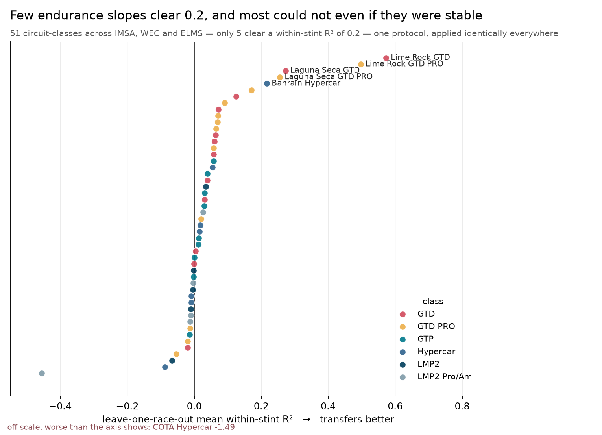
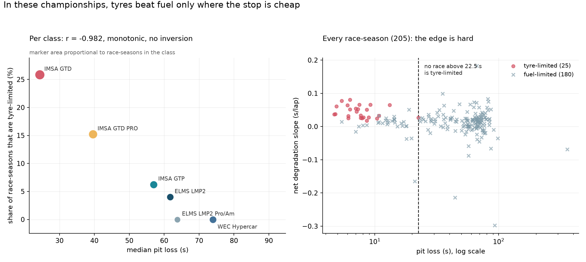
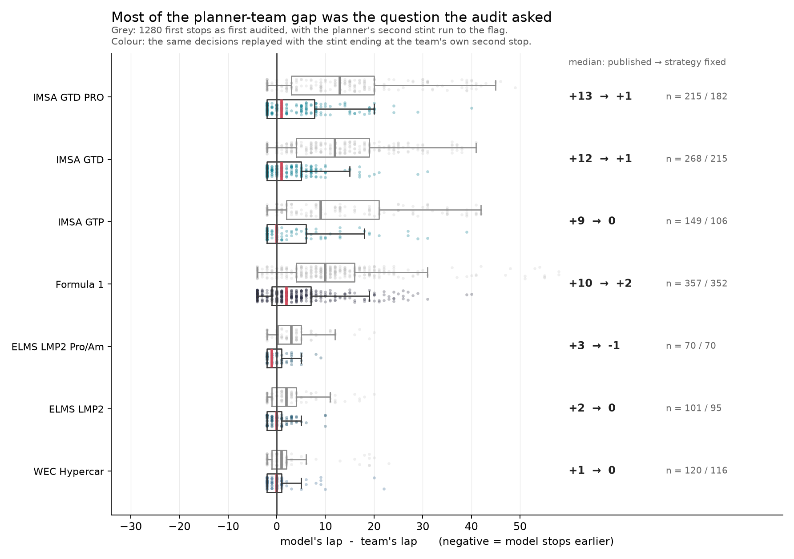
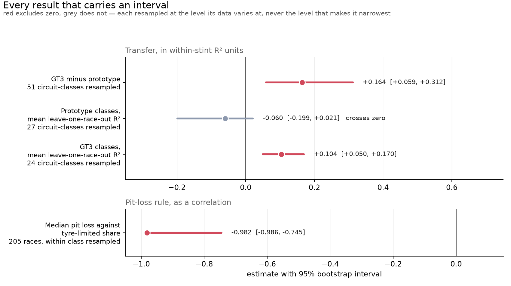

One protocol across four championships and seven car classes, and 1,280 real pit-stop decisions replayed against it. Transfer is mostly not measurable from public timing; held to the team's own next stop, a planner agrees with the pit wall, but the agreement comes from the horizon; and the stops reveal the compound difference the fitted slopes miss.
Fit a degradation slope on every season of a circuit but one, predict the held-out season, score the within-stint residual. Do it the same way everywhere.

Why the score is low. Inside a stint tyre age and fuel burned advance together. In Formula 1 the median fuel term is −0.053 s per lap against +0.040 for wear, so the net slope a stint shows is 0.030 s per lap against 0.67 s of lap noise. Rebuilt with a slope stable by construction, 16 of 22 F1 circuits and 43 of 50 endurance circuit-classes could not clear 0.2.
Measured directly, slopes move. As a variance component, the between-race spread is a median 31% [16, 60] of the slope, with I² 0.84 [0.66, 0.91] in F1 and 0.87 in endurance. Track temperature explains 2% of it.
Repairs, tested on Formula 1. The real Pirelli compound (C1–C6), Friday long runs, a temperature term, past-only fitting and a category-wide slope: none establishes a gain. The raw GT3-over-prototype difference (+0.164) falls to +0.035 [−0.005, +0.085] paired within the 9 events that run both, a difference between circuits rather than car types.
An exact dynamic program plans every endurance race under a hard fuel constraint and reports whether the tyre-optimal plan needs more stops than the tank forces.

Six class points, monotonic. The interval is bootstrapped over races, recomputing each class summary inside every replicate. Over every race-season, pit loss alone separates the regimes at AUC 0.977, the net slope at 0.865.
Both terms enter. In the closed-form index the slope carries more of the spread, and dropping either from it costs a similar share of the verdicts (difference +0.030 [−0.017, +0.084]). Alone, pit loss ranks the regimes better than the slope by +0.155 [+0.087, +0.231]. This describes the endurance planning model on these three endurance championships, not a law: the regime is decided inside the planner, so it is close to an identity of the model.
Every real first stop is replayed. The model is asked five laps early, given the state as it was, and its recommendation compared to the lap the team chose.

But a rule with no fitted quantity does as well. Balancing tyre age before the team's next stop ties the full Monte Carlo engine's error in 7 of 7 classes. The agreement is a property of the horizon; the engine's slopes and hazard add nothing to it.
In endurance, with one net slope, the timing does not depend on the tyre at all, so the replay cannot test the tyre model.
3 · What the stops reveal. Inverting the time-optimal stop at the lap each team chose gives the wear ratio that would make it optimal: the tyre's age at the stop over the length of the next stint, with no fitted slope in it. It is 0.73 [0.68, 0.77] when teams move to a harder compound and 1.74 [1.43, 2.53] when they move to a softer one, on the side hardness predicts for 79% of decisions; the fitted slopes manage 48%. Teams act on a compound difference that public timing does not resolve.
What does not explain the shorter first stints. Wear that grows with fuel load, steeper first stints, track position (a cover-aware Stackelberg engine moves the lap away from the real stop), Salminen's undefendable undercut, and a durability bias in the slopes against an independent source.
The residual in one-stop races is +4 [+2, +7]; in the races a lap of distance from the planner goes with 0.42 s [−0.24, +1.11], which the 5.6 s of spread between cars cannot confirm or reject. A prospective test was frozen before the 2026 São Paulo Grand Prix.
Three baselines, scored on 1,263 of the audit's 1,280 decisions, from the same artifacts, on the same metric. Written to win if they could — a straw man would prove nothing. The 17 that are not scored sit at four IMSA race-seasons with no fitted multi-stop plan, so there is no pit loss or net slope for a rule to read. Separately, a rule that cannot fire on a decision returns no lap and is not credited with one: coverage is reported beside every error, because answering a fifth of the decisions accurately is not the same as answering all of them.
| Class | Exact optimiser | B1 fixed interval | B2 threshold | B3 fuel deadline |
|---|---|---|---|---|
| Formula 1 | 10 | 11 | 7 | — |
| IMSA GTP | 9 | 9 | 54 | 14 |
| IMSA GTD | 12 | 7 | 18 | 14 |
| IMSA GTD PRO | 12 | 9 | 33 | 15 |
| WEC Hypercar | 2 | 2 | 39 | 1 |
| ELMS LMP2 | 2 | 3 | 45 | 4 |
| ELMS LMP2 Pro/Am | 3 | 2 | 45 | 4 |
Median absolute lap error against the real stop. Reported per class, because IMSA runs three at the same rounds with median pit losses of 57 s (GTP), 24 s (GTD) and 40 s (GTD PRO) — one IMSA row would average three strategy regimes into a number describing none of them. A rule sits closer than the optimiser in 5 of the 7 classes; in three of those the winning rule is B1, which uses no fitted quantity at all, and in the two others it ties the optimiser rather than losing to it. B3 is undefined in Formula 1, which has not refuelled since 2010, and is reported as undefined rather than substituted with the race end.
No fabricated data, anywhere. Every quantity is measured from published timing or absent. Where a source lacks something, that is a stated limitation and the affected layer is not fitted.
Two estimators were withdrawn. A track-evolution correction was validated on synthetic races and failed twice on real fields. It is described rather than omitted, and the omitted variable is reported as diagnosed and unfixed.
The paper contains no numbers. Every quantity in the manuscript is a macro generated from the committed artifacts, so it cannot drift from the data — regenerate and it is correct, or CI fails.
604 tests, including a file whose only job is to recompute each published headline from its artifact and assert the result appears in the document that publishes it.
A Limitations section, generated rather than written. Published numbers do not all rest on the same weight of evidence, and a results table cannot show which is which — a correlation across 205 race-seasons and a threshold set by one race print identically. thin_evidence.md walks the artifact behind each headline and counts what sits underneath it, so each number can be weighed on its own evidence.
